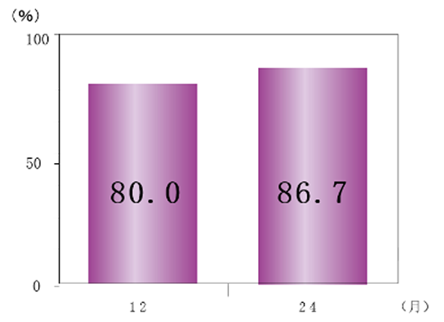

高い継続率に関連するのは、アクテムラの有効性・安全性・薬剤費のバランスの良さ
- ●アクテムラが1st-BIOとしても2nd-BIOとしても治療継続率が優れる根拠として以下が考えられる
- ①有効性の面では一度達成された寛解が維持される割合が高く効果が続くこと
- ②安全性の面では有害事象のプロファイルが全例調査により大部分明らかになっており、より安全にご使用頂けること
- ③薬剤費の面では高額医療を使わなくとも自己負担が少なく患者さんに優しい薬剤であること
①寛解維持率が高い

東広島記念病院において、アクテムラ投与開始6カ月後にDAS28-CRP寛解を達成した15例のうち、寛解を維持していた症例は12ヶ月後80.0％、24ヶ月後86.7％であった。
岩橋充啓, リウマチ科 第45巻 第6号 653-658頁より抜粋
②安全性プロファイルがわかる全例調査の結果がある
| 全例調査 中止理由 | 例数（％） | ||
|---|---|---|---|
| 症例数 | 7,901 | ||
| 中止症例数 | 1,302 | （16.5％） | |
| 中止理由 | 有害事象発現のため | 606 | （7.7％） |
| 効果不十分のため | 350 | （4.4％） | |
| 治療目的達成のため | 59 | （0.7％） | |
| 来院せず | 68 | （0.9％） | |
| その他 | 213 | （2.7％） | |
| 未記載 | 6 | （0.1％） | |
RA患者へのアクテムラ点滴静注用全例調査の結果、投与開始24週までに中止した16.5％中効果不十分による中止は4.4％であった。
アクテムラ®点滴静注用 全例調査最終報告「関節リウマチ」より改変
③薬剤費が安い
点滴静注用 1,177,943円
皮下注
オートインジェクター 1,021,566円
シリンジ 1,017,718円
平成26年薬価で算出
関節リウマチ診療ガイドラインより抜粋